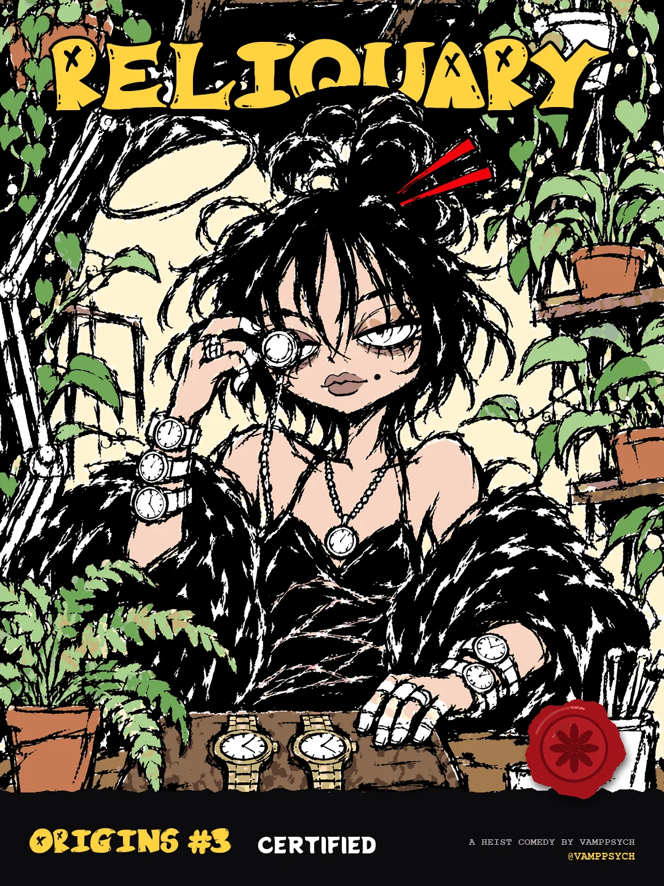
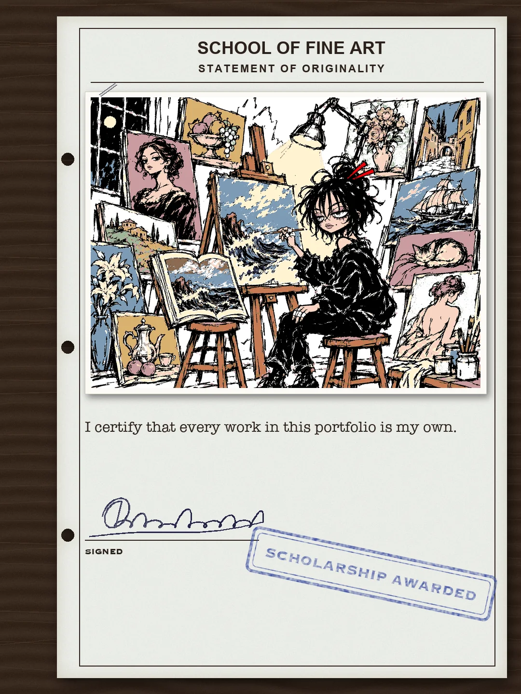
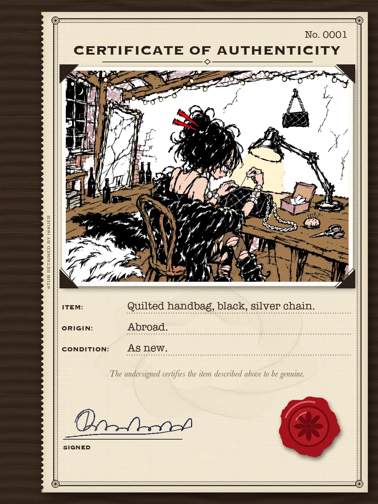
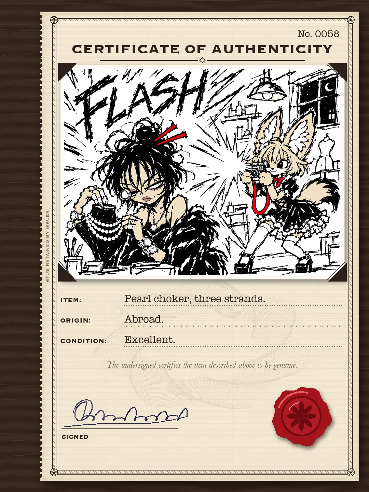
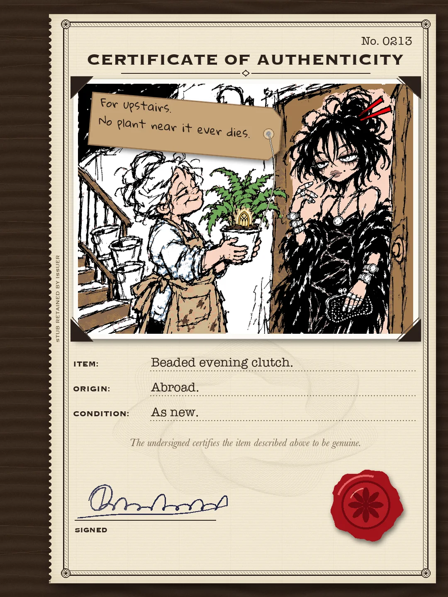
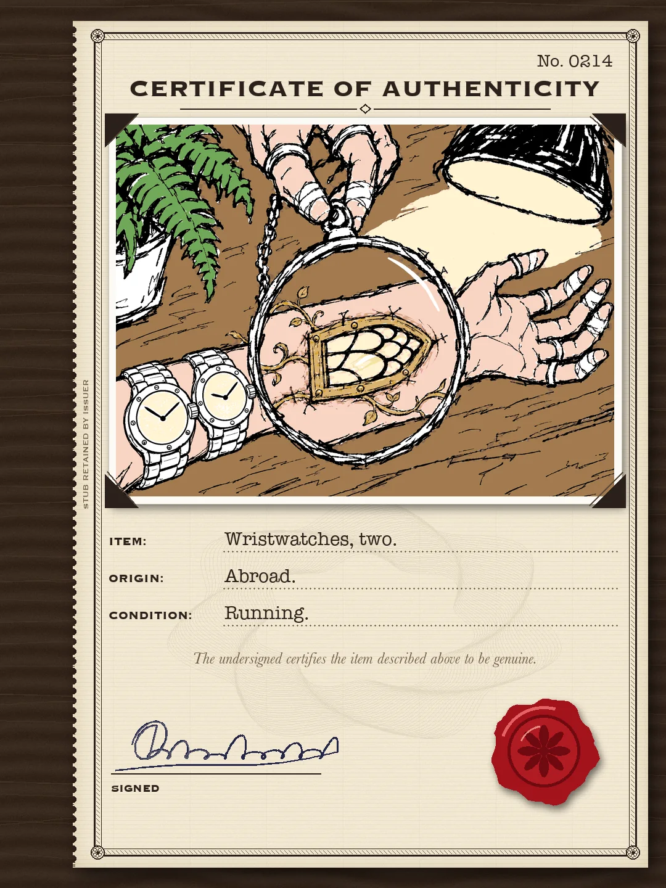
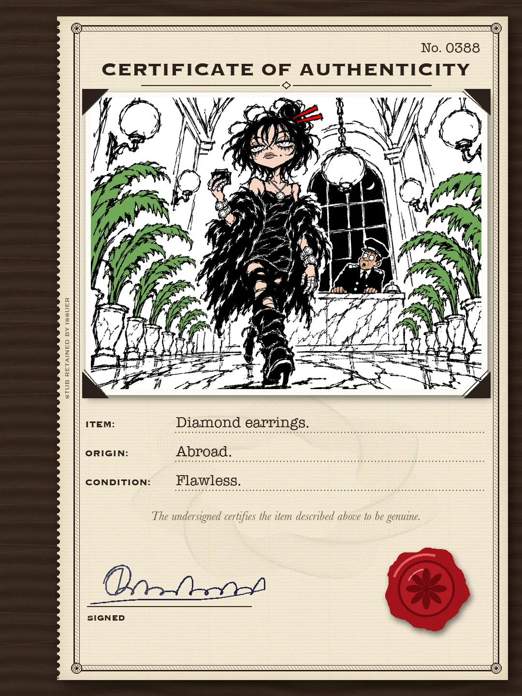
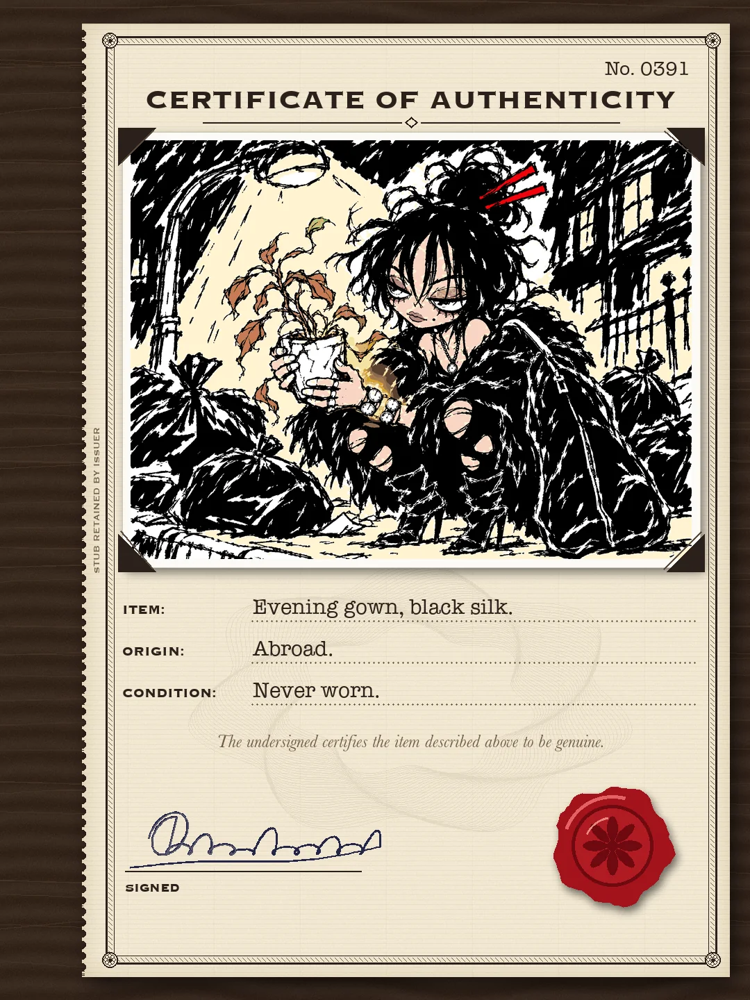
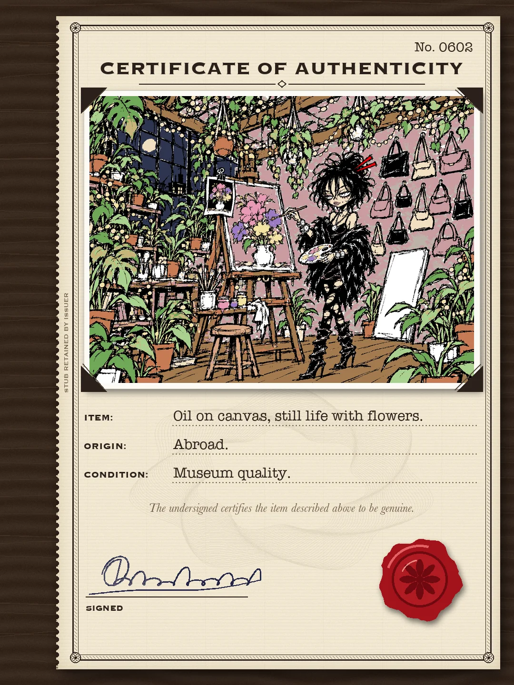
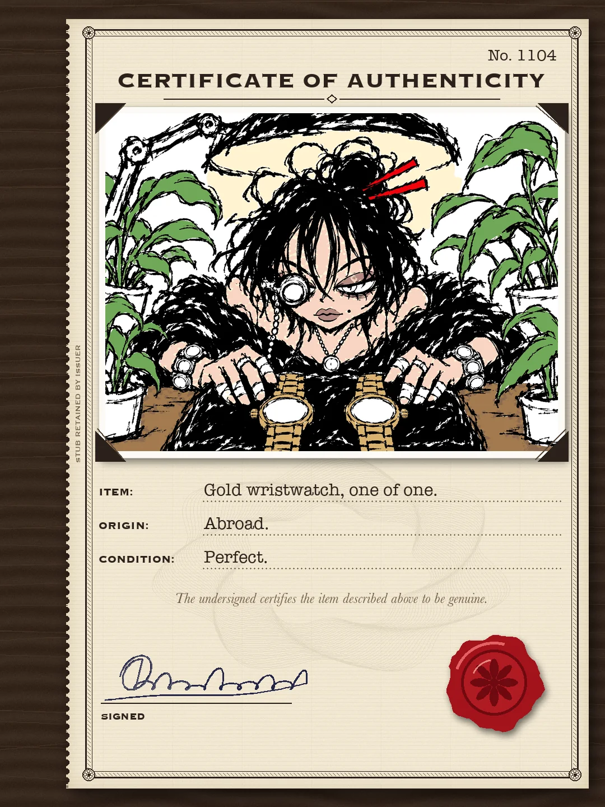
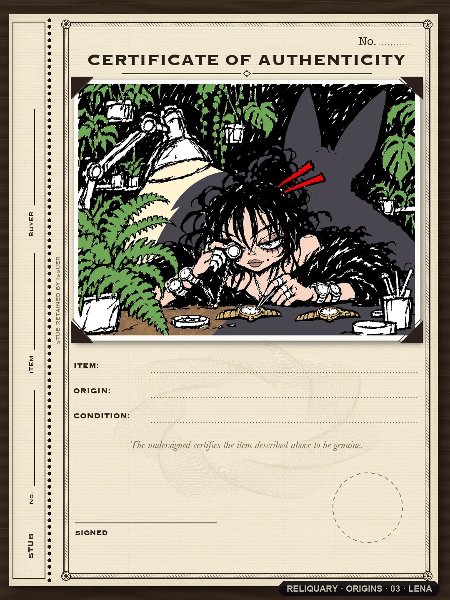
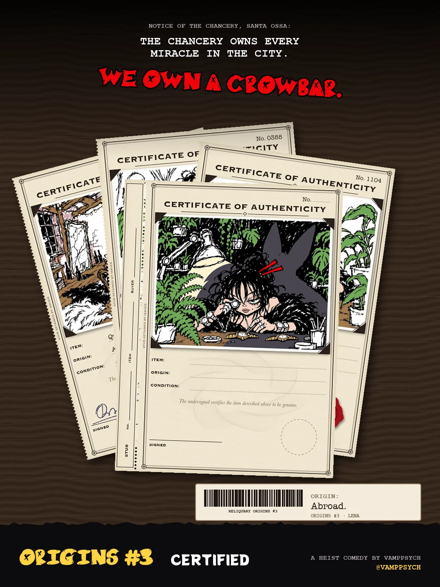
A MANHWA · ORIGINS #3
LENA · CERTIFIED
every fake got a certificate. the real one didn't 🌿
The cover, 10 certificates, the back. Read it top to bottom.












END OF ORIGINS #3
She never wrote a certificate for the fern. The night Rin leaned in is Episode 1.